- description du projet
- liste du materiel
- les branchements
- mise en route du programme
- mise en route du programme sur trinket
- resultat
sommaire :
-
experience réel :
calories dépensées en 24 heures en s'adaptant aux temperatures des 16 couchés/levés de soleil dans l'iss
Chaque jour, durant le coucher du soleil, le corps humain doit utiliser beaucoup d’énergie pour s'adapter aux changements de température.
Quelle quantité d'énergie le corps humain doit-il mobiliser dans l'ISS, ou il y a 16 couchers et levers de soleil par jour ?
Nous comptons mener notre expérience en calculant le nombre de calories dépensées pour s'adapter aux nouvelles températures seize fois par 24 heures dans l’ISS (soit deux fois en trois heures).
Pour cela, nous allons nous servir des capteurs de température et d'humidité, et de la camera pour obtenir la couleur d’un pixel déterminant la luminosité.
Nous allons enregistrer ces données de manière chronologique dans un fichier CSV. Une fois les données récupérées et de retour sur terre nous en ferons des graphiques, et nous calculerons les calories dépensées en 24h.
mise en place du materiel pour l'experience temoin
le materiel :
(si vous n'avez pas tous ça, vous pouvez aussi le faire grace a l'emulateur sense hat trinket)
-une raspberry pi
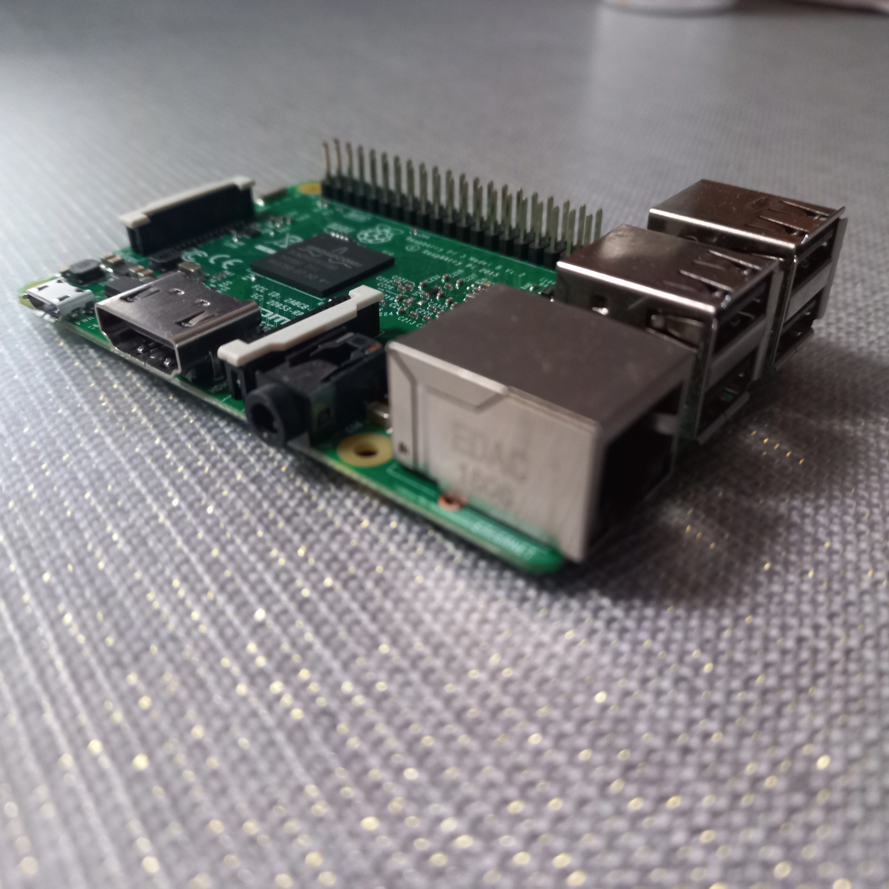
-un sense hat
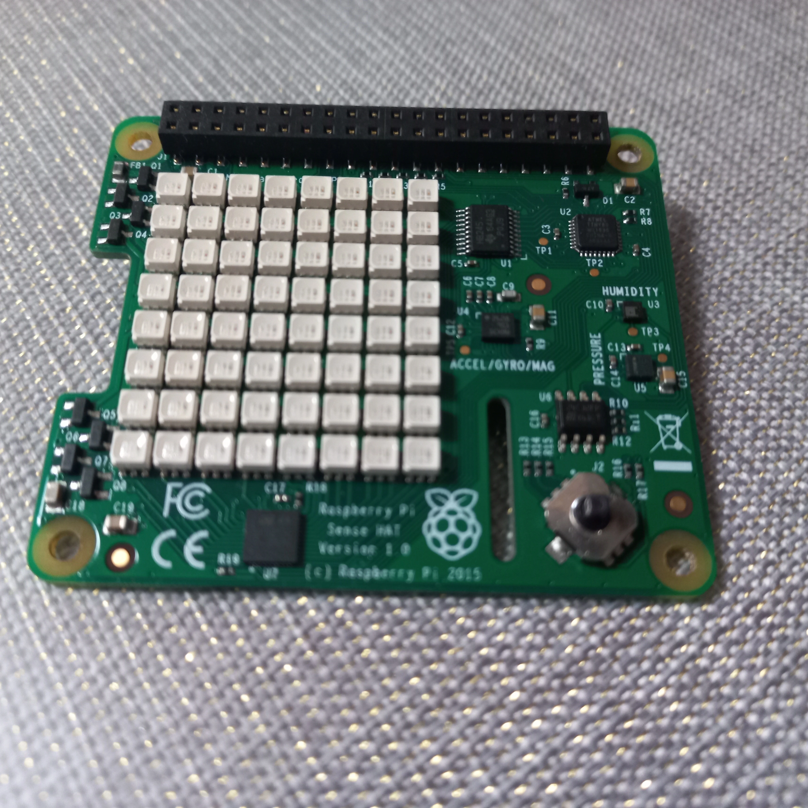
-une camera pour raspberry pi
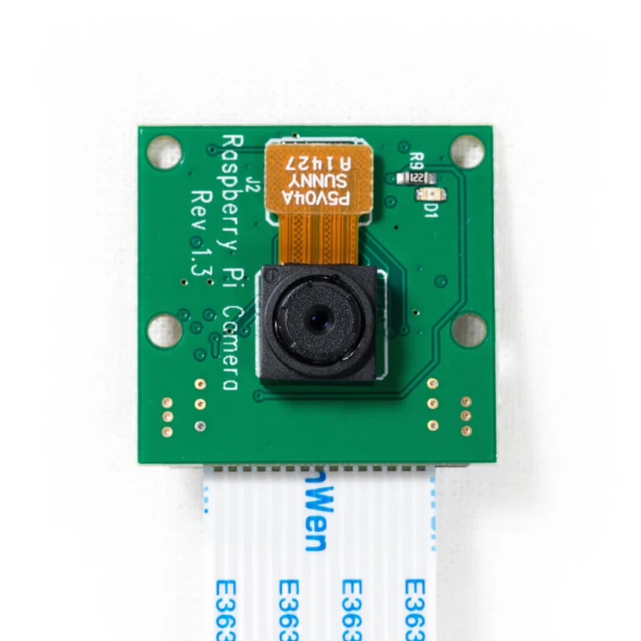
-un ecran
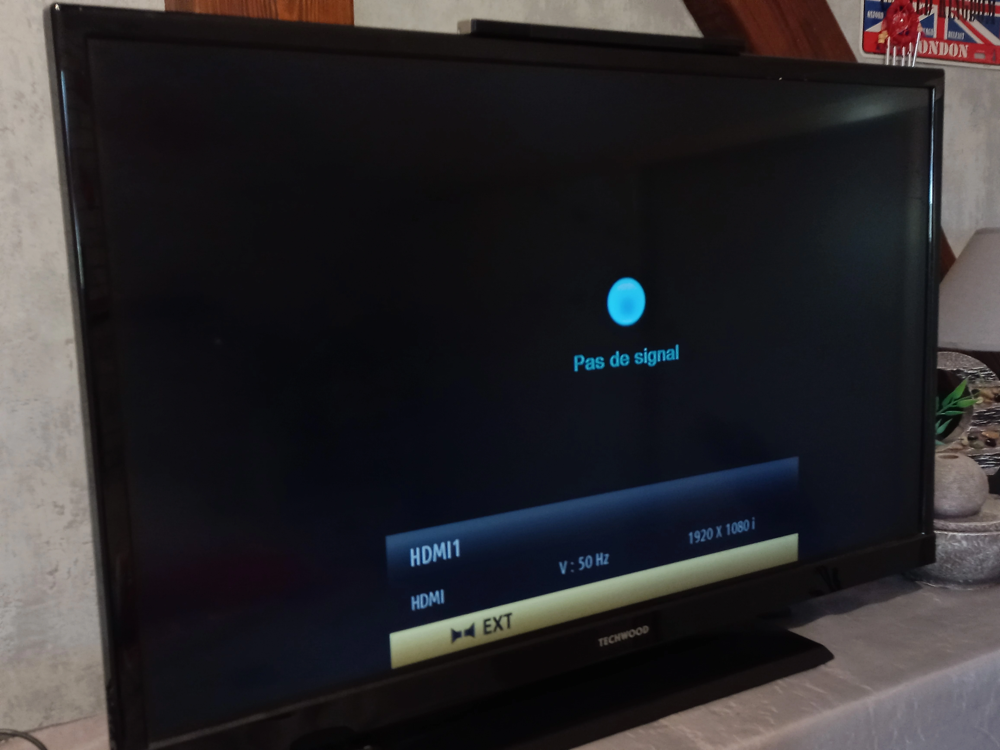
-une souris

-un clavier
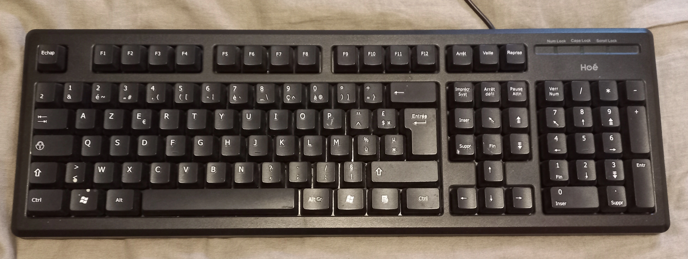
branchement :
on essemble la raspberry et le sense hat
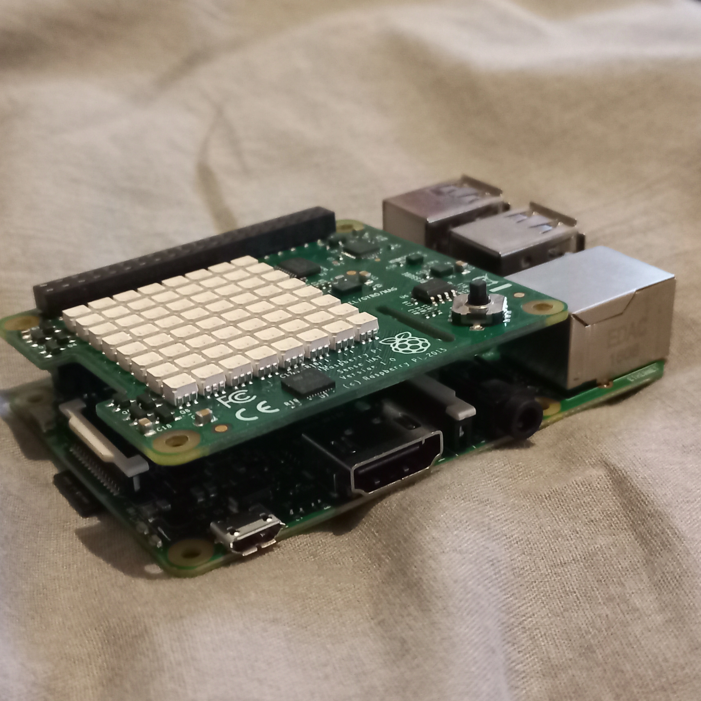
on alimante et on branche la raspberry a l'ecran

on branche le clavier et la souris sur la raspberry
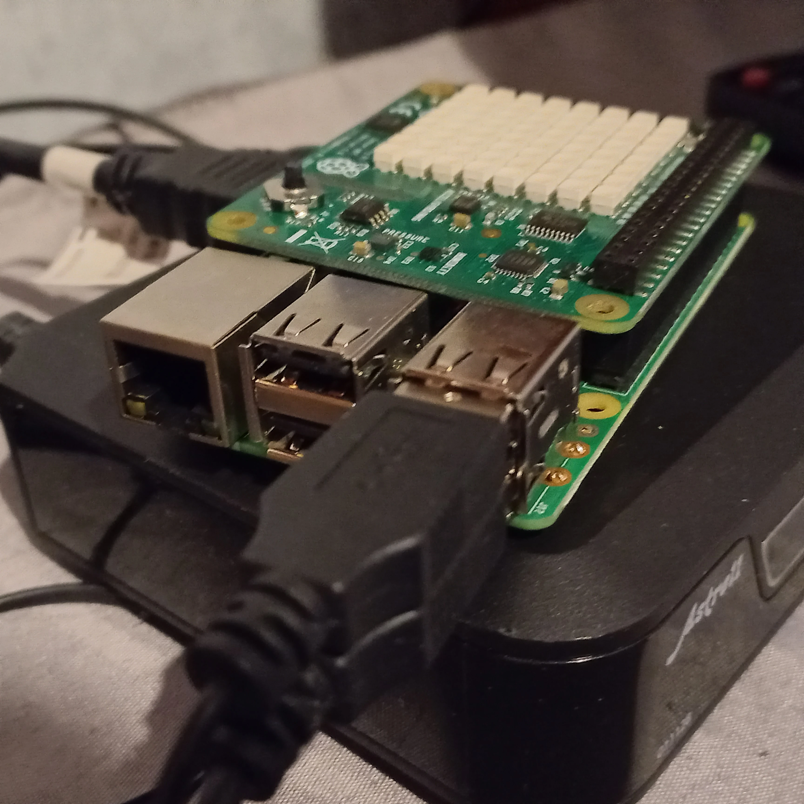
mise en route du programme
tout d'abord, vous pouvez telecharger le code sur github ci-dessous
on se retrouve sur le bureau
on va dans l'application thonny ide
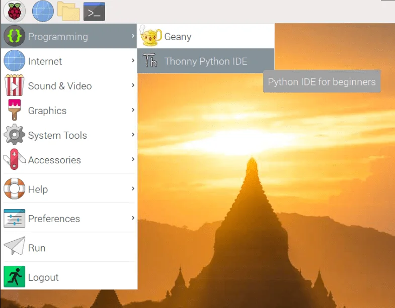
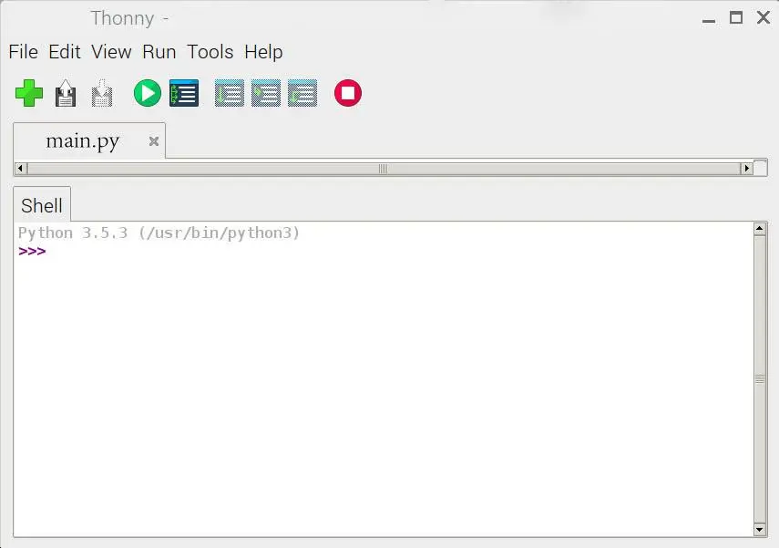
on y lance le programme puis on attend 3 heures
a la fin, on recupere le fichier 'data.csv' et 'calorie.csv' et on en fait un graphique.
mise en route du programme sur trinket
tout d'abord, vous pouvez telecharger le code sur github ci-dessous
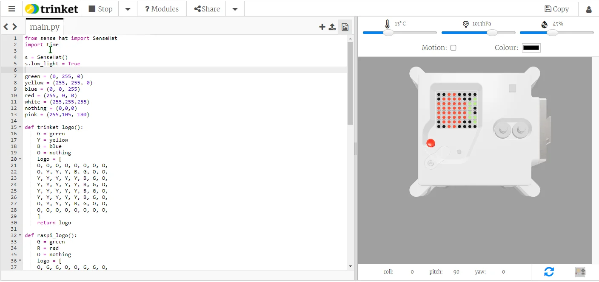
on suprimme le code deja present
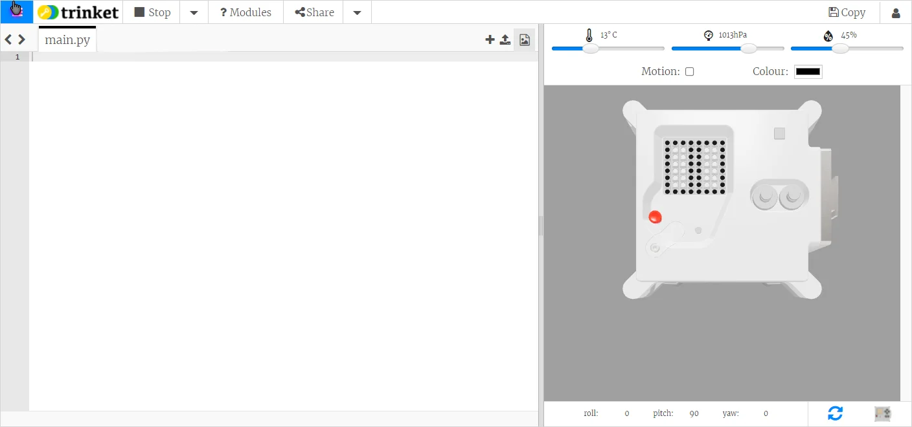
on colle le code recuperé sur github
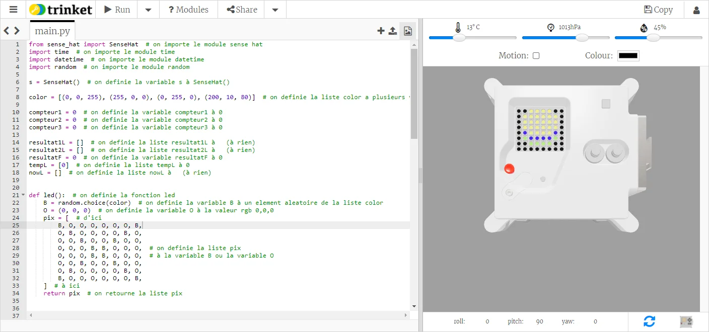
on y lance le programme puis on attend 3 heures
a la fin, on recupere le fichier 'data.csv' et 'calorie.csv et on en fait un graphique.